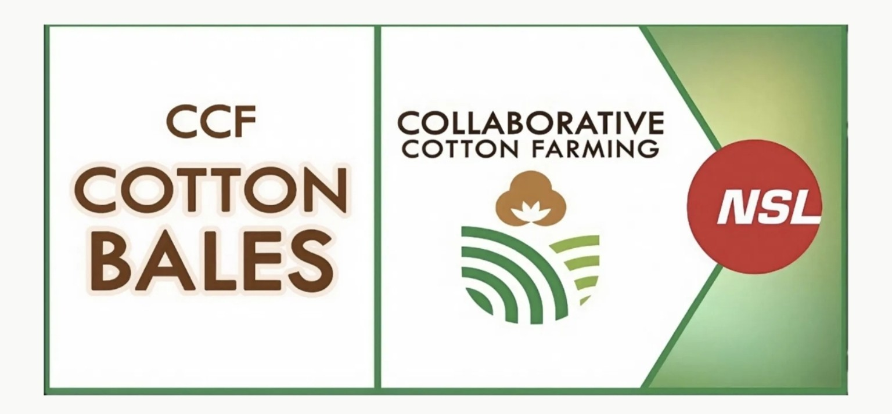
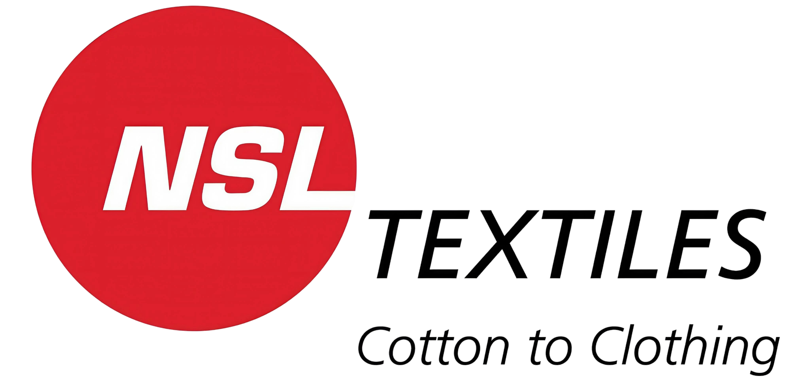

THE COTTON VALUE CHAIN, CONNECTED
From seed
to fabric.
Every stage connected.
Collaborative Cotton Farming brings seed genetics, farmer partnerships, ginning, bale traceability and textile manufacturing into one connected value chain.
Under NSL Textiles Limited · Strategic partnership with Nuziveedu Seeds Ltd.
CCF / SEED-TO-FABRIC CONNECTED VALUE CHAIN
Seed geneticsNUZIVEEDU SEEDS
Fiber qualityHVI-ALIGNED DATA
Trace every baleFARMER → LOT → BALE
CCF / COLLABORATIVE COTTON FARMING01 — 04
SEED GENETICS → FARMERS → GINNING & BALING → TEXTILESBUILT AROUND TRANSPARENCY
CCF AT A GLANCE
A connected chain.
Measurable impact.
ILLUSTRATIVE DEMO DATA
These figures are editable. Replace with verified CCF operating data before publication.
FARMERS · LAND · PROCESSING · BALESONE CONNECTED VALUE CHAIN
Seed to fabric.
Not silo to silo.
Each stage adds value and creates the information needed to understand where the cotton came from, how it was processed and what quality it carries forward.
01
GENETICS
Seed selection
Nuziveedu Seeds genetics support the farming ecosystem from the very first stage.
INPUT · HYBRID / VARIETY→
02
FARM NETWORK
Farmer partnership
Capture the village, sowing, variety and approved quality information for each farmer.
DATA · FARMER PROFILE→
03
GINNING & BALING
Processed lots
Connect incoming seed cotton with lot numbers, bale IDs, ginning outturn and fiber test reports.
OUTPUT · TRACEABLE BALE→
04
TEXTILE MANUFACTURING
Fiber to fabric
Carry consistent provenance and quality information into yarn and finished textile production.
VALUE · FINISHED FABRICA SHARED VALUE CHAIN
Collaboration from
cotton to clothing.
Under NSL Textiles Limited in strategic partnership with Nuziveedu Seeds Ltd. CCF is built around supply-chain transparency, stronger farmer outcomes and quality-led sustainable textiles.
“Dedicated to 100% supply chain transparency, higher farmer incomes, and premium sustainable textiles.”

CCF · COLLABORATIVE COTTON FARMINGGROUP ORGANIZATION

NSL Textiles Limited“Cotton to Clothing”SEED GENETICSNuziveedu Seeds Ltd.
PROCESSINGCCF Ginning & Baling Divisions
TRACEABILITY SYSTEM
Bale barcodes and QR lookup pages are designed to connect lot identity, farmer origin and approved fiber-test data. HVI reports should only be published after verification against the original lab record.